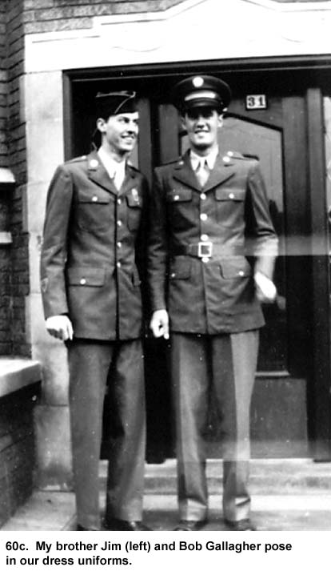
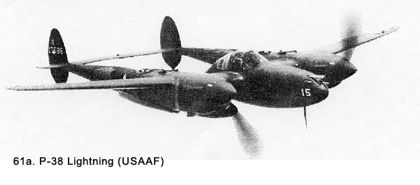

|
Table of Contents < - - - return Chapter 9 < - - - next
World War II Story by Robert F. Gallagher Chapter 8 - Things Improve Is life so dear or peace so sweet as to be purchased at the price of chains and slavery? Forbid it, Almighty God! I know not what course others may take, but as for me, give me liberty, or give me death!. Patrick Henry _______________________ Our outfit continued its training. A few months after the cadet incident, we got a change in our noncommissioned officers. Monteleone was transferred elsewhere. We didn't ask where because we didn't care. Our only concern was he was no longer part of our organization. One staff sergeant, who was a cadre member, got a medical discharge for some reason and we speculated it was because of his contacting a social disease. The stories of his immoral behavior he bragged about continuously would lead one to that conclusion. Meanwhile, Sergeant Lush wound up in the camp stockade awaiting court martial for going AWOL several times. Another corporal who was part of that group was also in the stockade for going AWOL. This pretty well wiped out the original cadre team and they brought in a whole new team to replace them,. These guys were draftees like us who had been in the Army since shortly after Pearl Harbor, and they had one to two years more service. The difference was like night and day. We seemed to have been lifted out of a pit of sleaze because this new bunch of rocker-armed sergeants, anything but exemplary in their conduct, nevertheless gave us a sort of cleansing feeling. The change was noticeable in many ways, but in particular it greatly reduced the amount of complaining we did. The new men were just as strict with us as the others, but every statement out of their mouths did not have some off-colored or downright perverted meaning. We considered the change a big improvement. The new first sergeant was named Ambrose, and he was completely different from Montelone. He was short and husky with a barrel chest. He seldom raised his voice, but he seldom had to. We knew by his appearance he was not someone to tangle with. The greatest difference was in his method of administration. Things like leading the first call in the morning and daily formations during the day were left to the platoon leaders. We seldom saw him except hanging around the orderly room. This authority by delegation kept up for the rest of our military service. A new officer, Lieutenant Engler, was put in charge of our platoon, which consisted of gun sections 1, 2, 3, and 4. He seemed a little more open with us and, therefore, was fairly well respected. He was younger than the other officers in our unit and, to a limited degree, would engage in general conversation with us when conditions warranted, but never when Captain Mc Kee was in the vicinity. Like the other officers, he followed the strict code of not fraternizing with us during our off duty time. Our new platoon sergeant was Staff Sergeant
Lou Kornich (See Fig. 60b). Until his arrival, we Kornich had class, a quality subordinates would not normally ascribe to their sergeants. It was hard to define and the word itself was never used. It was just something we felt. We felt like we were under the command of a real leader who had the ability to guide us properly under all circumstances. This made reacting to his constant orders somewhat easier to tolerate. Not that we had either an option or an alternative. Blind obedience and conformity-the alpha and omega of military life-were the law, and any thought of dissent or individuality had been eliminated from our psyche by now. We wondered at first if our approval of Sergeant Kornich was real, or if he simply looked good in comparison to what we had come to expect. Were we comparing him to the recently-departed Sergeant Montelone, the cadre members and the always obnoxious Captain Mc Kee; and concluding he was the best of the worst. As time went on, our approval of Kornich's style did not diminish. Then too, we had all become better soldiers, and we knew better how to do what was required of us. Over the next several months, Kornich even seemed to mellow somewhat. The shocker came when we found out later he was seen at the chapel every Sunday, and had high moral standards. He did not wear his religion on his sleeve but everyone soon learned this was a completely different breed than the cadre members. The morale of our outfit, especially our platoon, was greatly enhanced by his arrival. By the time we got Kornich and the other new noncoms, we had learned there are no compliments given out in the Army. Nobody ever says "You did a good job," or "You really looked good on that drill today." Every day we heard nothing but reprimands and negative responses to everything we did. It was all part of the psychological indoctrination to make freethinking civilians into puppets who reacted immediately to any and all commands, regardless of consequences. This stupefied state of mind means the leaders were better able to send the dolts up against an enemy trying to waste them. And so Sergeant Kornich and the rest prepared us to be soldiers who obeyed orders on command-right or wrong, sensible or not, difficult or dangerous. I got to go home on a furlough. The train trip took two days each way, and I was home for five days. My brother Jim was home on furlough at the same time so I got to compare notes with him. While home I bought a new hat I had seen in a shop downtown. I thought it looked pretty cool until I wore it for the picture outside the front door of our apartment building (See Fig. 60c). From the smile on my brother Jim's face, obviously he thought it was more on the funny side. I believe I wore it only a few times.  Almost all my buddies from the old neighborhood were scattered all over the world but there were a few available with whom I could enjoy a few beers. They brought me up to date on what had happened in the neighborhood since I was gone and any news they had heard from other friends in service. Back at Camp Haan, we went on several extended maneuvers. One time we went up to an air base just outside of the town of Santa Maria. We set up our guns around the field and stayed for several weeks. Shoulder insignias for the Fourth Air Force were issued and we sewed them on our right sleeve. We lived in air force barracks adjacent to the airfield. It was a base for the twin-engine P-38 Lightning fighter planes, (See Fig. 61a) and pilots were being trained in this plane for the first time. It was considered a hot ship, and there were a lot of accidents. Two soldiers in our outfit got the Soldier's Medal for pulling a pilot out of a burning plane that had crashed as it tried to land.
 One evening while I was walking across an open field at the end of the runway to a movie, I looked up to see one of the P-38s, with only one engine operating, making the approach to the runway. I wasn't sure if the pilot had lost one engine or if he was practicing one-engine landings as part of his training. Suddenly, without any warning, it dropped down and crashed onto the field about fifty yards in front of me. It made this sickening noise on impact as it plowed a long furrow in the ground. We watched the panic-stricken face of the pilot through the canopy as he skidded to an abrupt stop. When I got to the crash site, several GIs had opened the plane's canopy and were talking to the pilot. An ambulance arrived in minutes, and when they lifted him out of the cockpit, he looked stunned. His body was completely limp but his eyes were open and we could not see any bleeding. The next day we heard he died. Finally, the accident situation got so bad that the Army Air Force had the chief test pilot from Lockheed Aircraft Company in Burbank, California, the manufacturer of the plane, come down to show the new pilots what the plane could do under the guidance of an experienced pilot. The pilot's name was Anthony "Tony" Le Vier,1 and he was considered one of greatest test pilots in the country. He put on quite an air show for them, and we got to enjoy it too. He flew with only one engine working the entire time he was in sight. As part of his demonstration, he flew the plane upside down for the length of the airstrip with the canopy about ten feet above the concrete. At the end of the airstrip, he rose up slightly, turned the plane up on edge, and flew between two closely spaced trees. I don't know if it helped the new pilots or not, but it was a great thrill for the rest of us. We loaded up and returned to Camp Haan that evening. It was our first night time convoy that did not go too well. Many gun sections got mixed in with civilian traffic and we heard some got lost. There was a lot of ribbing of those who showed up late. Time was passing and wondered why we were not being sent overseas. There was a persistent rumor going around our battalion that made us nervous. It called for our antiaircraft unit to be broken up and sent to Europe as replacements for infantry outfits. We all hoped it would not come to pass. Chapter 9 < - - - next Table of Contents < - - - return
Footnotes and Source of Photographs. Copyright, Robert F. Gallagher, 1999 - 2015, all rights reserved on all images and content.
|
 had both feared
and hated anyone in that
rank and position. It was different with Kornich, who was both feared and
liked. That is, he was liked as well as you could like someone who spends
most of the day yelling orders at you and crabbing about how you performed
duties he assigned. The nickname of crab ass was soon tagged on him. When he
had some detail to fill he would approach us and say, "I want two
volunteers." Because nobody ever volunteered for anything at this time
in our training, he would follow up with a quick arbitrary selection of,
"You and you." He snapped commands unmercifully as he ran us
through close-order drills on the parade grounds. We began to feel like we
were some kind of a crack drill team that had been lying low but was now
blossoming. His efficiency made it harder for us to dislike him. So, why in
the hell did we like him? Was it that our expectations had been lowered?
had both feared
and hated anyone in that
rank and position. It was different with Kornich, who was both feared and
liked. That is, he was liked as well as you could like someone who spends
most of the day yelling orders at you and crabbing about how you performed
duties he assigned. The nickname of crab ass was soon tagged on him. When he
had some detail to fill he would approach us and say, "I want two
volunteers." Because nobody ever volunteered for anything at this time
in our training, he would follow up with a quick arbitrary selection of,
"You and you." He snapped commands unmercifully as he ran us
through close-order drills on the parade grounds. We began to feel like we
were some kind of a crack drill team that had been lying low but was now
blossoming. His efficiency made it harder for us to dislike him. So, why in
the hell did we like him? Was it that our expectations had been lowered?